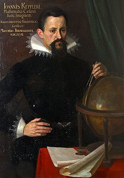
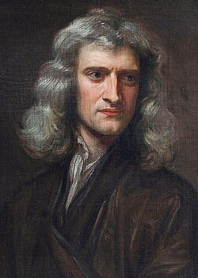
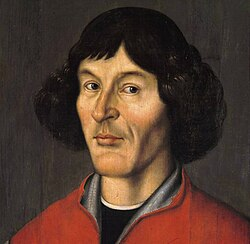
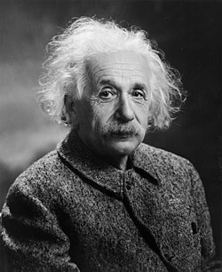
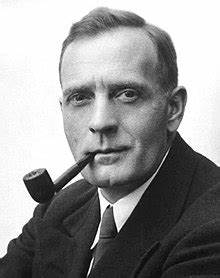
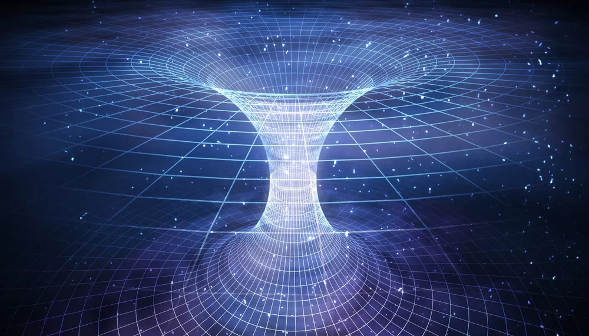
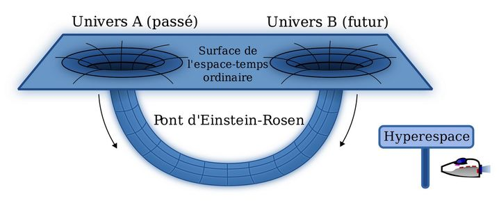
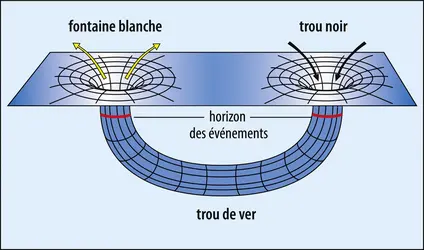

Lois et théorèmes
Voici les plus grandes lois et théorèmes du spatiale !

Kepler
Loi des orbites, Loi des aires et Loi des périodes
Les planètes se déplacent autour du Soleil, en suivant des orbites.
En balayant des aires égales et en ayant des périodes de révolution liées à la taille de leur orbite.

Newton
Loi de la gravitation universelle
Chaque objet dans l'univers attire tous les autres objets avec une force proportionnelle à la masse des objets et inversement proportionnelle au carré de la distance entre eux.

Copernic
Héliocentrisme
La théorie selon laquelle le Soleil est au centre de l'univers

Einstein
La relativité restreinte et générale
La relativité restreinte traite de la façon dont les objets se déplacent à des vitesses proches de celle de la lumière.
Et la générale explique que la gravité est le résultat de la courbure de l'espace-temps causée par la masse et l'énergie

Hubble
L’expansion de l’univers
L'expansion de l'univers signifie que l'univers se dilate avec le temps, les galaxies s'éloignant les unes des autres.
Ma théorie préférée !
La théorie du trou de ver

Un trou de ver formerait un raccourci à travers l'espace-temps.

On ne sait pas où ils pourraient se trouver s’ils existent, mais certains pensent qu’ils peuvent être dans les trous noirs.

